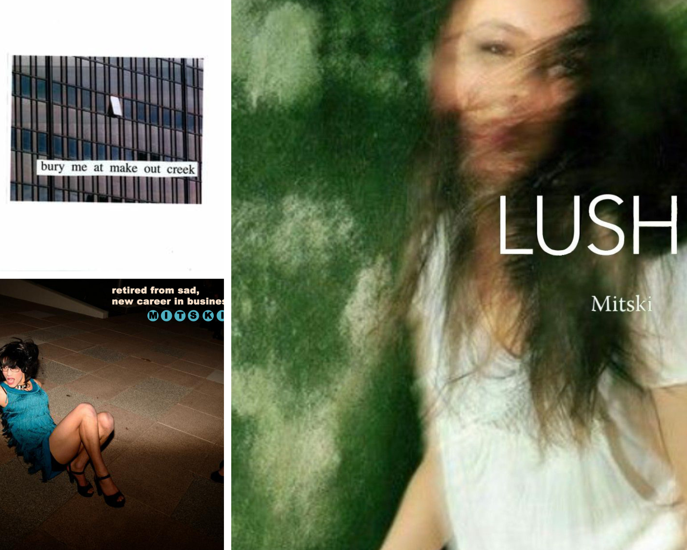
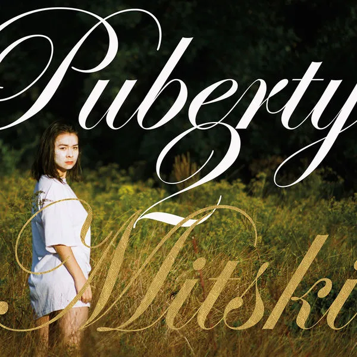
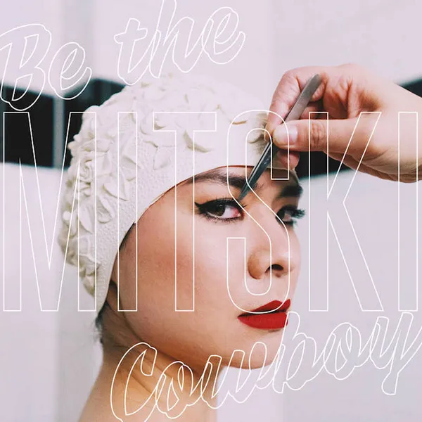
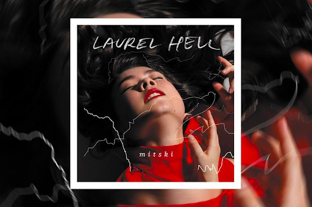

Behind the Scenes of Mitski
Mitski Miyawaki (born Mitsuki Laycock; September 27, 1990), known professionally by the mononym Mitski, is a Japanese-born American singer-songwriter. Mitski self-released her first two albums, Lush (2012) and Retired from Sad, New Career in Business (2013), while studying studio composition at Purchase College's Conservatory of Music. These albums were created originally as her senior project at Purchase. She released her third studio album, Bury Me at Makeout Creek, in 2014 through Double Double Whammy after graduating. She then signed with Dead Oceans in 2015 and released her critically acclaimed albums Puberty 2 (2016), Be the Cowboy (2018) and Laurel Hell (2022), the last of which entered the top ten in several territories. The Guardian dubbed her the "best young songwriter" in the United States.
2012-2014:Lush; Retired from Sad, New Career in Buisness; Bury Me at Makeout Creek
After enrolling at Hunter College to study film, Mitski decided to pursue music instead and transferred to SUNY Purchase College's Conservatory of Music, where she studied studio composition. During her time at Purchase, she recorded and self-released her piano-based first and second albums, Lush (2012) and Retired from Sad, New Career in Business (2013), as student projects. While there, Mitski met Patrick Hyland, who has produced her albums after Lush. In 2013, she collaborated with indie-rock artist Mike Rasimas, providing vocals for the original song Ego and a cover of "Nightcall" by Kavinsky. After graduating, she served as the vocalist for the short-lived prog-metal band Voice Coils[18] and began work on her third studio album, Bury Me at Makeout Creek, which was released on November 11, 2014, through Double Double Whammy. The album was reissued with four bonus tracks on April 7, 2015, through Don Giovanni Records. The album's raw, impulsive guitar represented a sonic departure from the orchestral and classical piano sounds of her first two albums. It garnered acclaim from numerous publications.
2015-2017:Puberty 2
On December 22, 2015, Mitski signed with Dead Oceans. She announced her fourth studio album, Puberty 2, on March 1, 2016, and shared the lead single, "Your Best American Girl".[25] She released another single, "Happy", before the release of the album on June 17. Produced by Hyland, the album was recorded over two weeks at Acme Studios in Westchester County, New York. The album received widespread acclaim from music critics.[28] "Your Best American Girl" was named the 13th best song of the 2010s by Rolling Stone. In a 2016 episode of the Cartoon Network show Adventure Time, her song "Francis Forever" was covered by Olivia Olson as the character Marceline the Vampire Queen. On February 21, 2017, the Pixies announced U.S. tour dates with Mitski as a supporting act. On May 1, a compilation album consisting of 100 songs by various artists titled Our First 100 Days was released. It includes Mitski's cover of One Direction's song "Fireproof". The compilation aims to raise funds for organizations that support causes threatened by Donald Trump's proposed policies. Mitski played a cover of the song in 2015, but that version has since been taken down. Mitski also covered Frank Sinatra's 1951 classic "I'm a Fool to Want You" for the 7-Inches For Planned Parenthood compilation album. On October 4, 2017, Lorde announced that Mitski would open for her on some dates on her Melodrama World Tour.[35] On November 1, a short film starring Mitski called Sitting was released.
2018-2019:Be the Cowboy
On April 20, 2018, Mitski teamed up with the experimental band Xiu Xiu on the song "Between the Breaths" for the soundtrack of the sci-fi comedy film How to Talk to Girls at Parties, based on the short story of the same name. On May 14, 2018, Mitski opened pre-orders for her fifth studio album, Be the Cowboy, and released the lead single, "Geyser", with an accompanying music video. The second single and its video, "Nobody", was released on June 26, 2018, and the third and final single to precede the album, "Two Slow Dancers", was released on August 9 alongside a lyric video. Be the Cowboy was released on August 17, through Dead Oceans. It was critically acclaimed and named the album of the year by Pitchfork, Vulture and Consequence of Sound.
On tour in 2019, Mitski began incorporating choreography into her live performances inspired by Butoh, a form of dance theater developed in post-war Japan, in which "performers draw on chaotic internal emotions but depict them with precise, repetitive gestures." The approach reflected her wish to "give audiences something new" on her second headlining tour since Be the Cowboy's release, as well as a desire "to develop her own, idiosyncratic ways of maintaining a grip on an audience," since she'd learned "that the jumping around onstage, getting everyone pumped up, doesn’t come naturally to me." Mitski worked with performance artist Monica Mirabile to devise the tour's "highly stylized, sometimes unsettling" movements. Butoh influenced choreography was also used in her music video for "Working for the Knife". In August 2019, Mitski ended her hiatus from social media to post a statement denying allegations made by a Tumblr user that she had been involved in a child trafficking ring: "I don't know the accuser, and I don't know how or why they have come to associate me with their trauma."
In September 2019 at the final performance of her Be the Cowboy Tour in Central Park, Mitski announced that it would be her last indefinitely. She later talked about how she planned to quit music completely and "find another life." By early 2020, Mitski had changed her mind and decided to return to music, partly because she owed her label another album and partly for herself. She described making the decision to continue, "What it came down to was, ‘I have to do this even though it hurts me, because I love ... This is who I am. … I’m going to keep getting hurt, and I’m still going to do it, because this is the only thing I can do.’ "
2020-Present: Laurel Hell
Mitski shared her new song, "Cop Car", in January 2020, a never-released piece from the soundtrack of The Turning. She was featured in the song "Susie Save Your Love" from Allie X's album, Cape God, released in February 2020. On October 29, 2020, it was announced that Mitski will provide the soundtrack to the graphic novel This Is Where We Fall. The sci-fi Western story written by Chris Miskiewicz and Vincent Kings "unpacks themes of theology, death, and the after-life". Of the project, Mitski said "It was exciting to make a soundtrack for a comic book, It allowed me to work outside of my usual songwriting form and try to approach it like a score, but without any of the cues that come with working alongside a moving image, which ended up being both freeing and challenging. I hope the end result helps to immerse you in the story!" A country song called "The Baddy Man" was released as the first preview from the soundtrack on March 5, 2021. Z2 Comics released the album on cassette with the standard hardcover novel on May 5, 2021. A limited edition deluxe vinyl was also released. At the moment, Z2 has no plans to put the soundtrack on streaming services.
On October 4, 2021, Mitski announced on her social media that she would be releasing a new single, "Working for the Knife", the next day as the lead single to her upcoming sixth studio album. The song would later be named the 7th best song of 2021 by Pitchfork. Soon after the song's release, Mitski announced her 2022 European and North American tour. She followed it up with "The Only Heartbreaker" on November 9, 2021. The same day, Mitski announced her sixth studio album, Laurel Hell, would be released just before her European and North American tour, on February 4, 2022, called Laurel Hell Tour. On December 7, 2021, "Heat Lightning" was released as the third single from the album. On January 12, 2022, "Love Me More" followed as the fourth single from Laurel Hell. In March 2022, "The Only Heartbreaker" peaked at number-one on the Billboard Adult Alternative Airplay chart. On March 4, 2022, Mitski was announced as one of the performers for the Glastonbury Festival, scheduled for June 22–26, 2022. On April 19, 2022, Mitski's cover of "Glide", from the soundtrack of All About Lily Chou Chou, was released on streaming services. The song was previously available as a bonus track on physical versions of Laurel Hell and was used in the 2022 film After Yang. Mitski appears on the song "This Is A Life" from the soundtrack for the 2022 film Everything Everywhere All at Once. The song also features David Byrne, and Son Lux.
